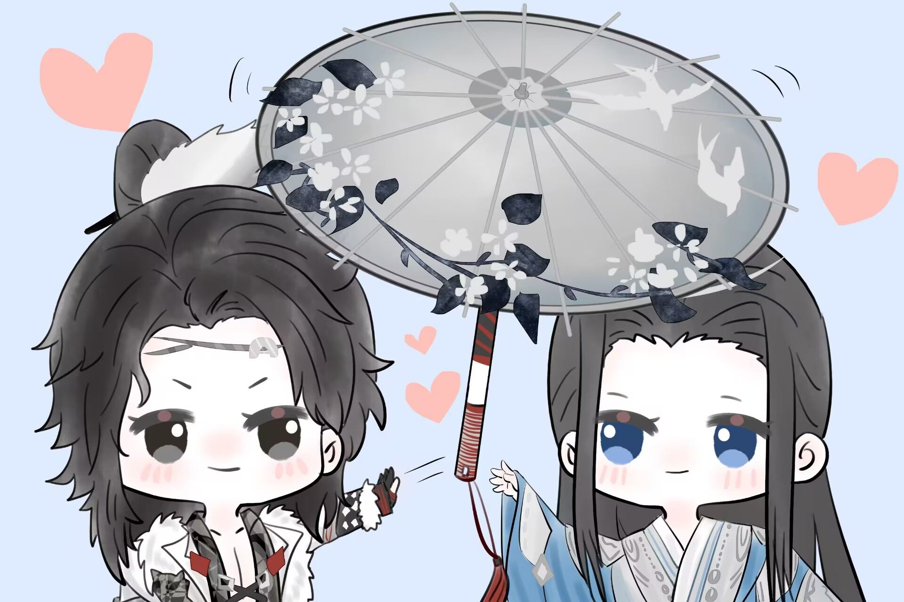

给小影：
之前单机了那么久的剑三，感觉也没有想象中的好玩，虽然九州他们有时候会带我一起打打本，但平时除了打本就不知道怎么去玩，也不敢麻烦师父师姐们带我一起，虽然他们人都很好，师父还会不厌其烦的给我讲解技能，发零花钱。师姐打本也不嫌弃我dps低还总是犯错导致团灭。其他人还会在我不明白大战是什么的时候打完本开小号车带我去大战，然后夸输出就靠我啦。但我还是觉得我那么菜，去找大家玩就像个累赘一样，更不敢去组野人啦。
萌新入门攻略看了一遍遍还是不敢去尝试，在退游边缘徘徊的我产生了找个萌新亲友一起玩的想法，就这样点开了华乾吧，刚好看到你发的找萌新共居的贴，加上好友后进了YY发现捏脸体型和声音意外的反差萌哈哈哈，你下游戏后YY麦忘记关了和室友吐槽妖号的时候我心里还咯噔了下，想着第一个自己找的亲友不会第一天就得死亲友了吧！然后你就给解释了哈哈哈哈，还说就是很惊讶，不是对我有意见。
后面你就带着我和默默师父他们一起玩一起摸宠。我一直都不喜欢抽卡游戏，有一个原因就是太黑了！但是和你在一起不知道为什么，意外的红。刚开始默默师父还问我要不要拜她的剑纯师父为师，但我已经有一个师父，觉得不太好就没有接话（虽然现在已经四个师父了...）。后来一起玩的久了，呱太师父也会和来YY的亲友介绍是两个新收的的徒弟，和师兄们说这是你们的师弟师妹，一直没正式机会拜师的我也不知道平时要怎么称呼默默师父，但我想她人那么好，多拜一个师应该也可以的吧！默默师父也和我提到她很想收个女徒弟，我也非常喜欢默默，非常好的师父，经常带我们打宝宝巴士，介绍玩法，还会提醒我们做活动日常，开小号帮忙凑活动道具。后来去玩密室为了召请到同一个房间终于有机会拜师啦，我也就顺其自然的叫上了师父，我们也就这样成为了师兄妹。
感觉你好像很喜欢我叫你师兄，明明比我小来着，第一次让我叫你师兄的时候我给你的定位还是超级无敌第一好的好亲友（当时心里还在想能不能拐个到个花花），本来叫师兄的时候是想撒娇逗你玩的，没想到会把自己也陷进去了（该死的亚撒西）。虽然有时候会有点感觉，但还没察觉到对你的喜欢。直到那个星期，那天的大战不怎么熟，默默师父又刚好有事，不想组野人就没打。然后你说下了要去复习明天的考试，我就和往常一样在帮会领地种菜，正好今天帮会杀猪就组了师姐和柠檬挞，杀完猪后看到你居然在大战！心里暗自决定明天就不主动叫你师兄了，但没想到后面都没给我发小脾气的机会，你直接就不理我了（委屈.jpg）。
那个星期过的真的很煎熬，具体我们相互也说过了，做什么都提不起劲，平常生活就会想到剑三，登了游戏想到你就很难受。一直觉得你是个很温柔很有分寸感的人，没想过你会动心，所以我想过很多种可能，唯一不敢猜想的就是你吃醋了，没想到这却是正确答案。
和好当天给你炸了大师赛竞猜兑换的烟花，本来想留着以后有机会给你炸的，可看到你就是憋不住了。就和你说找个地方，你带我回了霸刀山庄，炸出去的瞬间脑袋一片空白，怕你又会蹦出来个：6，就胡编了个借口说庆祝今天出奇遇了。然后你和我说：在这等我。鬼知道我对着这几个字在那开心了半天。满怀期待的等你摸完了门派宠物，过来把我双轻带上了柳祠，我们当时都不知道该说些什么，你们宿舍就断网了。然后我激动了一晚上。真没出息！
后来啊，可以说的就太多啦，我每天都在截图聊天记录。我发现你可以记得很多我说过的话做过的事，很温柔很细节。之前和你说过经常头痛，后来上课学到了可以缓解的办法就发给我了，真的有用唉！不过师兄那么细心肯定也在平常连麦时从我室友口中得知了我的学校了吧，每次她们谈论到时我都闭麦，可总是来不及，显得明显又刻意。一直没说学校可能也是在维护我的自尊心，高中自己造的孽最后得到的结果反倒不好意思了。我确实又摆又爱逃避，有时候总感觉和外界隔绝就什么也不怕了，却没想到遇到那么多可以让我在乎的人，但我却不敢轻易和他们一起讨论，怕哪天露馅了，大家会嫌弃我。但是总要面对的，我并没有师兄想象的那么好，自卑又敏感，有时候面对你透露的喜欢不敢去确认，又上瘾会去试探，找不到身上有什么值得你喜欢，觉得自己不配，怕相互理解后会失去你。但还是想让你知道，你真的很好，我喜欢你。
之前九州打本，有人YY问那个霸刀是谁，有人说了句是咩咩相好。果然，密聊里出现了你发的6，还好我早就知道会有这种场面，把事先准备好的“这样的，在我们这都叫相好”，“比如柠檬挞和她那108个情缘”的群聊记录贴给了你，你回了个哈哈哈。后来大战云一又问过我们是情缘吗，我也想到会有人当着我俩的面问，但是我却没想好怎么回答，也不好假装没看到，你率先回了“是师兄妹”，我把聊天框里的“没，是亲友”随后发了过去，在这一刻真的一点也不想做你师妹。后面换上了情头，大家都默认了我们的关系，在群里发着恭喜，但他们不知道的是，当事人并没有确定关系。你给我发过那个因为暗恋没说最后be了的树洞，我以为你会说的，可是没有。我也一直不敢提，因为之前的感情我a上去了，虽然在一起了，但最后都没什么好结果，我感觉这像个诅咒，在告诉我不能说，所以我怕说了最后我们还是会分开。周围的人也说过，暧昧期是最美好的时刻，但是纯爱战神不信，我觉得在一起会更好的，更因为这个人是你。你不说的话，也只能我来说了。
如果你不介意没有你想象中那么好的咩咩，不介意相隔千里的念想，并且愿意在这段感情中长久走下去的话，可以做我情缘吗？不止情缘那种。
参商